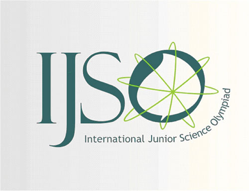

About Me
- Hi, I'm 黃泓諺 (Hongyan Huang).
- Physician, currently pursuing a Master's degree in Computer Science at NTU.
- Focus: Information Retrieval, combining medical expertise with computer science.
- Goal: explore cross-disciplinary research and innovation between medicine and technology.
- Outside academics: enjoy running, fitness, traveling, and anime.
Education & Experience

National Taiwan University (NTU)
M.S., Institute of Computer Science and Engineering (2025 – present)
2025 - present
Information Retrieval Laboratory
Research Area: Information Retrieval

National Cheng Kung University (NCKU) & NCKU Hospital (NCKUH)
M.D. Degree & Physician License (2020 – 2025)
2020 - 2025
Clinical training across multiple specialties
Achievements & Awards

2015
IJSO Gold Medal
International Junior Science Olympiad

2021-2022
CIO
FMSTW Medical Student Association
Skills & Interests
Technical Skills
Programming: C++, Python, Git/GitHub, LaTeX
AI & Data: Machine Learning, Information Retrieval, Medical AI
Medicine: Licensed physician with clinical training
Interests
Running & Fitness
Anime & Digital Art
Travel & Cultural Exploration